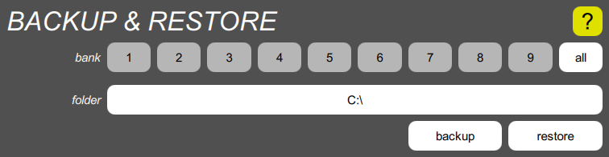

Backup & Restore

This tool lets you back up a single bank, or all banks, from the Digital Chroma to a folder on the computer running the Toolkit, and to restore single banks or all banks back to the Digital Chroma.
Backup
Tap the bank button corresponding to the bank you wish to back up, or tap “all” for all of them. Then tap the folder button, navigate to the folder you wish to store the programs in, creating it if it doesn’t already exist. Finally, tap the “backup” button. A progress bar will momentarily appear, and any problem will cause a message to appear in place of the progress bar. You can dismiss this message by tapping it.
A single bank is backed up as up to fifty files named “01.chr” to “50.chr”. A non-existent program is represented by the absence of the corresponding file. All banks are backed up as nine sub-folders named “1” through “9”, each containing up to fifty program files.
If you back up to an existing folder that already has Digital Chroma programs in it, those programs will be overwritten, or deleted in the case of non-existent programs. Since these old programs are contained in the computer and not the Digital Chroma, they are not protected by the Undo mechanism, so make sure you don’t back up to the wrong place.
Restore
Tap the bank button corresponding to the bank you wish to restore, or tap “all” for all of them. Then tap the folder button, navigate to the folder that contains the programs. Finally, tap the “restore” button. A progress bar will momentarily appear, and any problem will cause a message to appear in place of the progress bar. You can dismiss this message by tapping it.
If you’re restoring a single bank, you must choose the folder containing the up to fifty “.chr” files. If you’re restoring all banks, you must choose the folder containing the nine numbered sub-folders. When you restore a single bank, you are free to restore it into any bank, not necessarily the one you originally backed up.
When you restore, all programs in the affected bank or banks within the Digital Chroma are overwritten, or deleted in the case of missing programs. If you select an erroneous folder that has no programs in it, the Toolkit will delete all programs in the affected bank or banks. However, the old programs are protected by the Undo mechanism, so you can undo the restore operation if you accidentally restore from the wrong folder, or if you restore into the wrong bank.
Flash drive backup
The Digital Chroma has panel functions (the old cassette interface) that allow banks to be backed up and restored to an external flash drive. These are always stored in the same form as a Toolkit backup of all banks, with subfolders “1” to “9”. Those subfolders are contained within a root folder usually called “CHROMA1”, although the final digit matches the name used by the instrument over USB and Ethernet, as set by the Chroma number calibration function. Since the format is the same, it is possible to back up via the control panel and then restore via the Toolkit, or vice versa.